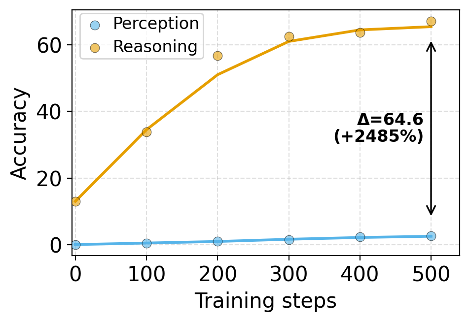
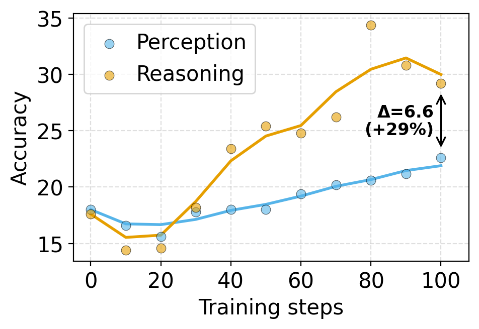
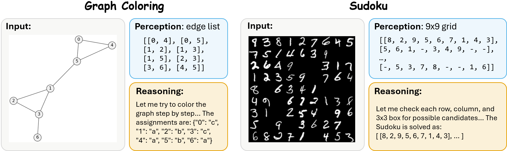
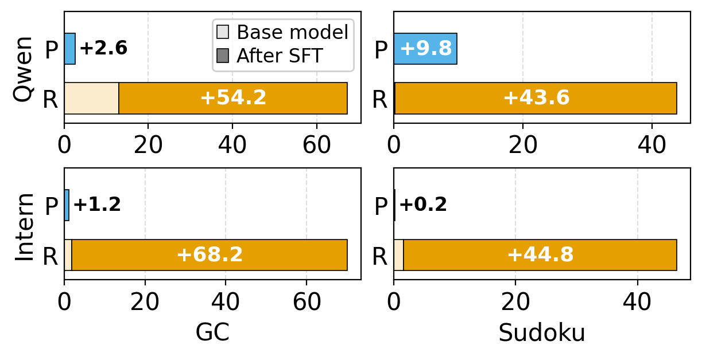
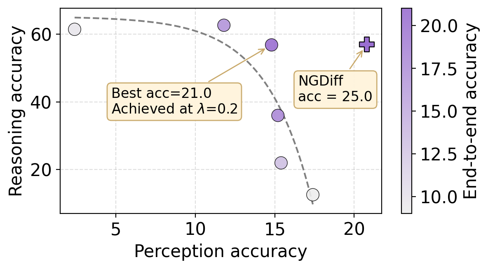
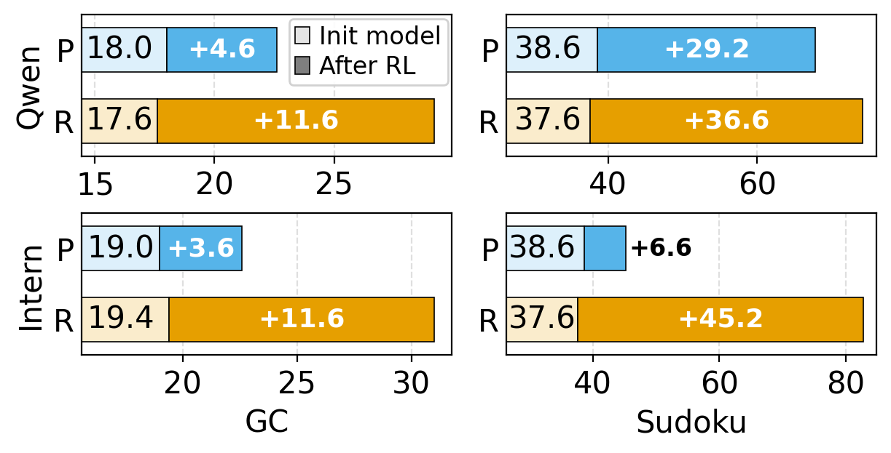
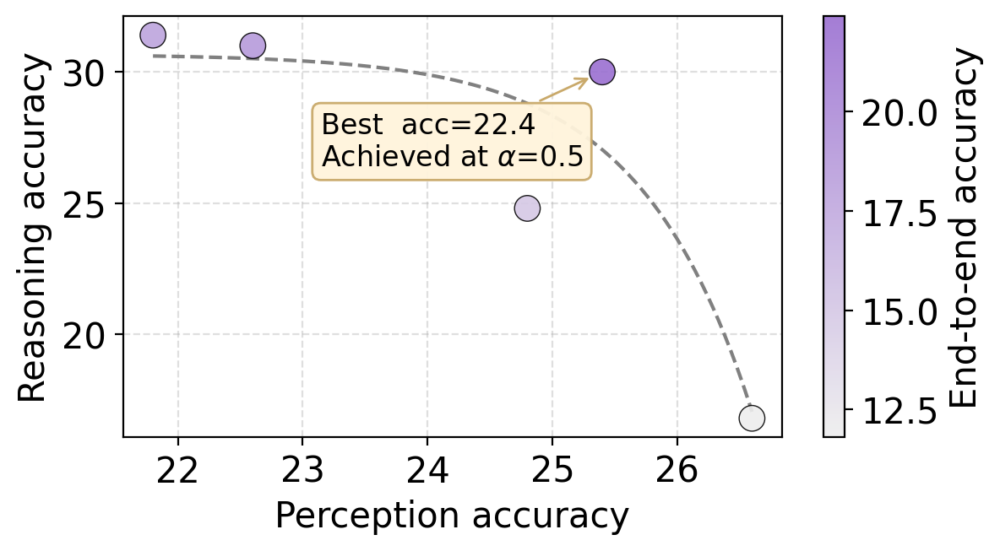

Abstract
Post-training has greatly improved reasoning in frontier vision-language models, yet its gains for perception remain comparatively limited, creating a bottleneck for end-to-end visual reasoning. To investigate this gap, we introduce a controlled diagnostic framework with two synthetic tasks that disentangle perception from reasoning. Our analysis reveals a consistent perception-reasoning asymmetry: post-training improves reasoning more substantially than perception, though the underlying mechanism differs by training paradigm.
For supervised fine-tuning (SFT), this asymmetry stems from token imbalance in chain-of-thought supervision, where perception occupies fewer tokens and thus receives a weaker training signal. Dynamically reweighting the loss mitigates this imbalance and boosts end-to-end performance by up to 18.2. For reinforcement learning (RL), the asymmetry instead arises from reward coupling: outcome rewards correlate more strongly with reasoning than with perception, weakening the signal for perception learning. Adding a perception-aware reward alleviates the imbalance and improves end-to-end accuracy by up to 6.0; even without ground-truth perception rewards, a reliable surrogate reward provides useful signal, yielding gains of 3.2 points.
Key Findings
A consistent asymmetry across SFT and RL
Across two model families (Qwen3-VL, InternVL3.5) and two tasks (Graph Coloring, Sudoku), both SFT and RL improve reasoning far more than perception, leaving perception as the dominant bottleneck for end-to-end visual reasoning.


The two paradigms share a symptom but, as we show below, arise from different mechanisms — and require different mitigations.
SFT: token imbalance → loss reweighting
Mechanism. In CoT supervision, perception occupies only ~2.5% of tokens and contributes just ~1.3% of the loss — token-averaged cross-entropy implicitly starves perception of gradient.
Mitigation. Reweight the loss to upweight perception tokens. A fixed weight already helps; dynamic multi-task balancing (NGDiff) lifts end-to-end accuracy by up to +18.2.
RL: reward coupling → perception-aware reward
Mechanism. The outcome reward correlates strongly with reasoning (r = 0.65–1.00) but only weakly with perception (r = 0.34–0.43), so perception receives a noisy credit signal.
Mitigation. Add a perception term to the reward. Ground-truth perception rewards give up to +6.0; a well-chosen surrogate reward still yields +3.2 without any perception labels.
A Controlled Diagnostic Framework
Real visual reasoning benchmarks rarely admit a clean separation of perception from reasoning. We build a synthetic testbed where the visual input has a canonical textual representation p*, enabling three orthogonal metrics:
- End-to-end accuracy — does the model solve the task from the image?
- Perception accuracy — does the model recover
p*from the image? - Counterfactual reasoning accuracy — given oracle perception
p*, can the model reason correctly?

p* is the edge list. Sudoku requires completing the 9×9 grid; p* is the partially-filled grid. Outputs are structured as perception followed by reasoning.
SFT: Token Imbalance Drives the Asymmetry
In CoT supervision, perception is a compact transcription while reasoning sprawls across verification, reflection, and self-correction. Token-averaged cross-entropy implicitly weights each part by its token count — so perception is starved of gradient.


Replace the standard token-averaged loss with
L = λ · Lp + (1−λ) · Lr,
where Lp and Lr are the token-averaged losses over the perception and reasoning spans, respectively.
A fixed reweighting already gives up to +13.8 points; dynamic balancing with NGDiff — which adjusts λ on the fly to equalize perception and reasoning gradients — gives up to +18.2.
RL: Reward Coupling Drives the Asymmetry
Under GRPO with an outcome reward, perception only influences the reward when the downstream reasoning also happens to be correct. The result is a credit-assignment problem: the reward signal is well-aligned with reasoning, but only loosely aligned with perception.


Optimize against R = α · ap + (1−α) · a,
where ap is perception accuracy and a is end-to-end accuracy.
Ground-truth perception rewards yield up to +6.0 end-to-end accuracy. When ground-truth perception isn't available, surrogate rewards still help — and reward–perception correlation is a reliable diagnostic for which surrogate will work, yielding up to +3.2.
Takeaways for VLM Post-Training
- Don't trust end-to-end accuracy alone. A model can post-train into much better reasoning without its perception meaningfully improving — and perception is what bottlenecks the next round of gains.
- The default objectives are biased. Token-averaged SFT and outcome-reward RL each have a built-in preference for reasoning over perception.
- The fix is paradigm-specific. SFT needs loss reweighting; RL needs perception-aware (or perception-correlated surrogate) rewards. Both are simple drop-in changes.
BibTeX
@misc{wu2026asymmetricoptimizationreasoningperception,
title={On Asymmetric Optimization of Reasoning and Perception in Vision-Language Model Post-Training},
author={Xueqing Wu and Yu-Chi Lin and Kai-Wei Chang and Nanyun Peng},
year={2026},
eprint={2605.29496},
archivePrefix={arXiv},
primaryClass={cs.CL},
url={https://arxiv.org/abs/2605.29496},
}